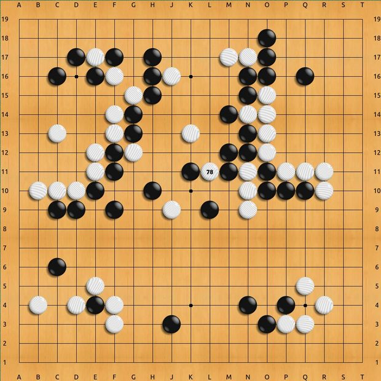
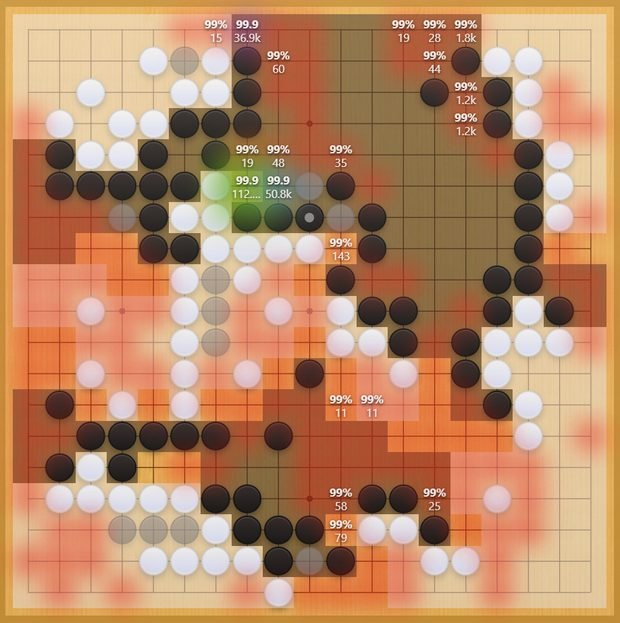
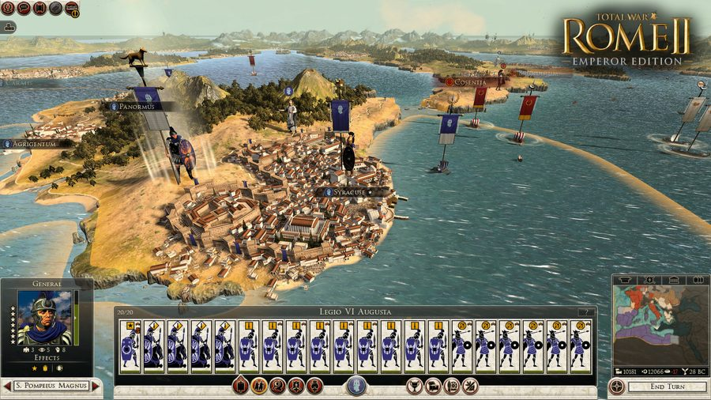
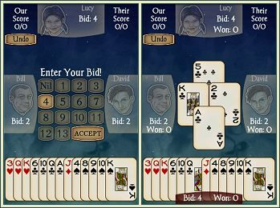

Dónde se usa
- Go. Es donde nació. Minimax no funcionaba porque nadie sabía escribir una función de evaluación para el go. Hacia 2006 los primeros programas con MCTS, como Crazy Stone y MoGo, dieron un salto enorme, y en pocos años ganaban partidas a profesionales en el tablero pequeño de 9×9.
- AlphaGo y AlphaZero. En 2016 AlphaGo, de DeepMind, ganó 4 a 1 a Lee Sedol, uno de los mejores jugadores del mundo. Era MCTS con dos redes neuronales: una que decía qué jugadas merecía la pena probar y otra que estimaba quién iba ganando. En 2017, AlphaZero quitó del todo las simulaciones al azar: la red evalúa la hoja y ese valor se retropropaga. Aprendió solo, jugando contra sí mismo, a jugar al go, al ajedrez y al shogi. Leela Chess Zero (Lc0) y KataGo son programas libres que siguen esa receta. AlphaGo sólo perdió la cuarta partida, por la jugada 78 de Lee Sedol (la primera imagen de abajo): según DeepMind, era una jugada con una posibilidad entre 10 000 de jugarse. Es el precio de explorar sobre todo lo que parece prometedor.
- Total War: Rome II (Creative Assembly, 2013). La IA del mapa de campaña usa MCTS para planificar parte de sus decisiones, un caso conocido de MCTS en un juego comercial que no es de tablero. Lo contaron sus desarrolladores en la Game/AI Conference de 2014, y fue la primera vez que MCTS llegaba a un juego de gran presupuesto.
- Juegos de cartas. El Spades para móviles de AI Factory usa una variante de MCTS para información oculta (ISMCTS, en la página 04) desarrollada con la Universidad de York, y se publicó cómo la ajustaron para que jugara de forma creíble y no sólo fuerte. Magic: The Gathering y Hearthstone son bancos de pruebas habituales en la investigación.
- Juego general. En las competiciones de General Game Playing el programa recibe las reglas de un juego que no ha visto nunca y tiene que jugarlo bien. Como no hay tiempo de escribir una evaluación para cada juego, MCTS, que sólo necesita las reglas, se convirtió en la técnica dominante.




El patrón es siempre el mismo: MCTS gana cuando hay muchas jugadas posibles, cuando no se sabe escribir una buena evaluación, o cuando el juego cambia y no hay tiempo de afinar una. Donde ya hay una buena evaluación y mucha táctica, como en ajedrez, la cosa es más complicada.
MCTS y el ajedrez: medido
Primero, jugar hasta el final al azar en ajedrez es inútil: una partida al azar dura cientos de jugadas, acaba casi siempre en tablas por falta de material, y su resultado no tiene nada que ver con la posición de la que salió. Con el código de la práctica, en Python, salen unas 90 iteraciones por segundo así. Cortando la simulación a 10 medias jugadas y contando el material al final salen unas 5 000, y además cada simulación dice algo. Ese es el MCTS básico de la guía de la práctica.
Contra los rivales de referencia, con 0,3 segundos por jugada, desde 8 aperturas y con los dos colores (16 partidas por rival):
| Versión | Aleatorio | Voraz | AlfaBeta2 |
|---|---|---|---|
| MCTS básico: UCB1, corte a 10 y material | 100 % | 72 % | 0 % |
| + simulaciones que prefieren capturar | de 3 a 16 % | ||
| + minimax implícito y simulaciones que capturan | 25 y 28 % | ||
| Respaldo minimax puro sobre la evaluación, sin simulación | 59 % |
(Los porcentajes son puntos: victoria 1, tablas ½. Con 16 partidas, diferencias de diez puntos pueden ser suerte; de 0 a 59, no.)
AlfaBeta2 sólo mira dos medias jugadas, y aun así gana todas las partidas al MCTS básico. El motivo es
el fallo de Monte Carlo que visteis en la página anterior: si dejáis una pieza
colgando, de las 35 respuestas del rival sólo una o dos la comen. En las simulaciones al azar, la mayoría de las
veces nadie la come, y la jugada sale con buena media. AlfaBeta2 mira las 35 respuestas y ve la que la come. En
ajedrez una sola jugada del rival lo cambia todo muy a menudo, y eso es justo lo que una media
esconde.
El MCTS básico os va a salir en una tarde con la guía. Lo que queda es atacar este problema, y no hay una sola respuesta: cada mejora de esta página es una idea que podéis probar, medir y quedaros o descartar. Las dos de abajo de la tabla mezclan MCTS con minimax, y es lo que más ha funcionado; no son las únicas.
Los mandos: qué se elige y qué lo limita
Un MCTS tiene pocos parámetros, y casi todos responden a la misma pregunta: cómo gastar un presupuesto de tiempo que no elegís vosotros. Por eso conviene empezar por el presupuesto, que es lo que de verdad decide el diseño.
El presupuesto: tiempo, no iteraciones
Lo que fija el juego es el tiempo por decisión:
- En la práctica, el que le deis: 0,3 segundos por jugada en
comparar.py, 1 o 2 en la ventana. La plantilla para al 90 % del tiempo, para no pasarse. - En un juego por turnos, el jugador espera unos segundos como mucho, y si hay varios rivales, se los reparten entre todos.
- En tiempo real, a 60 fotogramas por segundo, cada fotograma dura milisegundos, y la IA se lleva sólo una parte. Por eso MCTS se usa poco en tiempo real, y cuando se usa se reparte la búsqueda entre varios fotogramas: como se puede parar en cualquier momento, sigue pensando en el siguiente.
Las iteraciones son lo que cabe en ese tiempo. Con la plantilla, en Python, salen unas 5 000 por segundo en ajedrez: 5 720 en la posición inicial y 4 712 en un medio juego. Todo lo que haga más lenta una iteración se paga en iteraciones, y por eso cada decisión de abajo es un intercambio.
| Qué se elige | Qué cambia | Lo que cuesta o lo limita |
|---|---|---|
| Tiempo por jugada | Más iteraciones, mejor juego, cada vez con menos ganancia | Lo que deje el juego. En la práctica, 1 s |
| Profundidad de la simulación | Cuánto mira cada simulación hacia delante | Cada media jugada más son iteraciones menos |
| Simulaciones por hoja | Menos ruido en el resultado de cada hoja | Cada simulación de más es una iteración menos: un árbol más pequeño |
| La constante | Árbol más ancho o más hondo | Depende de la escala de la recompensa; se mide |
| Cómo se simula | Lo que se parece la simulación a una partida de verdad | Cada jugada con criterio es más lenta que una al azar |
| La evaluación al cortar | Lo que dice una posición a medias | Lo que sepáis del juego, y lo que tarde en calcularse |
| Guardar el árbol entre jugadas | Trabajo de la jugada anterior que no se tira | Memoria, y algo de código |
| El tamaño del árbol | Hasta dónde puede crecer | Memoria: unos 3 o 4 KB por nodo en Python |
Lo último no es un detalle. A unas 5 000 iteraciones por segundo, el árbol crece unos 5 000 nodos por segundo, y a 3 o 4 KB cada uno son de 15 a 20 MB por cada segundo que se piensa. En un ordenador no importa en un segundo, pero sí en un videojuego que piensa durante toda la partida, en una consola con la memoria contada o en un móvil. Ahí se limita el número de nodos y, cuando se llega al límite, se dejan de crear o se borran los menos visitados. El Spades de la sección 01 lleva desde 2013 una versión de MCTS con la memoria acotada, pensada justo para un móvil.
La profundidad de la simulación, medida
La plantilla corta la simulación a 10 medias jugadas y evalúa con el material. Con otras profundidades, a 0,3 segundos por jugada, contra Voraz, desde 8 aperturas y con los dos colores. Las iteraciones son las de los 0,9 s que busca, en la posición inicial; los puntos, en porcentaje, con ganadas-tablas-perdidas:
| Profundidad | Iteraciones | Contra Voraz | G-T-P |
|---|---|---|---|
| 0 | 23 847 | 100 % | 16-0-0 |
| 2 | 13 746 | 100 % | 16-0-0 |
| 5 | 8 540 | 100 % | 16-0-0 |
| 10 | 4 966 | 91 % | 14-1-1 |
| 25 | 2 053 | 69 % | 10-2-4 |
Contra Voraz, cortar pronto sale mejor que cortar a 10: con profundidad 0, 2 o 5 ganó las 16 partidas, y a 25 bajó al 69 %. Cuanto más larga es la simulación, menos iteraciones caben, y más se aleja su resultado de la posición de la que salió: veinte jugadas al azar cambian el material por casualidad. Con profundidad 0 no se simula nada y cada hoja vale su evaluación, como hace AlphaZero con su red.
Pero contra AlfaBeta2, con las profundidades 0, 2, 5 y 10, los puntos se quedan entre el 0 y el 12 %, todo dentro del ruido. La profundidad no es lo que falla contra AlfaBeta2: falla la media, que es lo que ataca el minimax implícito. Y una advertencia sobre las cifras: con 16 partidas, el margen es de unos 20 puntos. El 91 % contra Voraz con profundidad 10 de esta tabla y el 72 % de la tabla de la sección 02 son el mismo jugador medido dos veces.
El tiempo por jugada, medido
El mismo MCTS de la plantilla, con más o menos tiempo, contra Voraz. Las iteraciones son aproximadas, a unas 5 500 por segundo durante el 90 % del tiempo:
| Tiempo | Iteraciones | Contra Voraz | G-T-P |
|---|---|---|---|
| 0,05 s | unas 250 | 59 % | 8-3-5 |
| 0,1 s | unas 500 | 84 % | 13-1-2 |
| 0,3 s | unas 1 500 | 91 % | 14-1-1 |
| 1 s | unas 5 000 | 100 % | 16-0-0 |
Más tiempo es mejor juego, pero cada vez se gana menos: de 0,05 a 0,1 s son 25 puntos más; de 0,3 a 1 s, 9. Y el tiempo no arregla un fallo de diseño: si el jugador valora mal las posiciones con piezas colgadas, con más simulaciones las sigue valorando mal, sólo que con más seguridad.
Varias simulaciones por hoja
Otra forma de gastar el tiempo: desde cada hoja nueva, 4 simulaciones en vez de una, y su media. Cada hoja da un resultado menos ruidoso, pero el árbol crece cuatro veces más despacio. Contra Voraz, a 0,3 s: con una simulación por hoja, 91 % (14-1-1); con cuatro, 94 % (14-2-0). La diferencia cabe de sobra en el ruido. Es lo habitual: una simulación por hoja suele bastar, porque el árbol ya hace la media al volver muchas veces a los nodos que importan.
Y en minimax
Minimax tiene menos mandos: la profundidad, el orden de las jugadas y la evaluación. El problema es el reloj, porque el tiempo de una búsqueda a profundidad fija no se sabe de antemano. Con el AlfaBeta de la práctica, en Python, en un medio juego con 37 jugadas legales:
Cada media jugada más multiplica el tiempo, aquí entre 4 y 20 veces. Con 1 segundo por jugada, AlfaBeta(4)
se pasaría en el medio juego, aunque en la posición inicial tarde 0,66 s. Por eso los
programas de verdad no buscan a profundidad fija, sino con profundización iterativa: buscan a
profundidad 1, luego a 2, luego a 3, hasta que se acaba el reloj, y juegan lo que dijo la última búsqueda
completa. Parece un desperdicio repetir los niveles de arriba, pero cuestan poco al lado del último, y cada
búsqueda deja ordenadas las jugadas para la siguiente, que así poda más. Es la forma de que minimax también tenga
una respuesta en cualquier momento, algo que MCTS trae de serie.
Dónde entra lo que sabéis del juego
Que una dama vale 9, que capturar suele ser bueno, que el rey en el centro corre peligro: eso es una heurística, una regla que acierta casi siempre pero no siempre. Es lo mismo que escribíais en las máquinas de estados y en las reglas, sólo que aquí no decide la jugada: guía la búsqueda. Minimax y MCTS tienen sitios concretos donde meterla, y en la plantilla cada uno es una función:
| Para qué | En minimax | En MCTS | En la práctica |
|---|---|---|---|
| Valorar una posición sin acabar la partida | La evaluación en las hojas del corte. Es casi todo lo que sabe. | Al cortar la simulación, o en lugar de simular (profundidad 0). | recompensa |
| Mirar antes lo prometedor | Ordenar las jugadas, capturas primero: más podas. | El orden en que se expanden las jugadas sin probar. | Nodo, expandir |
| Que lo que no se guarda se parezca a una partida | No hay: minimax no simula. | La política de simulación: capturar, dar jaque, no colgar piezas. | simular |
| Empezar con ventaja lo prometedor | No hace falta: lo mira todo hasta el corte. | Un sesgo en la selección, o visitas ficticias al crear el nodo (sección 06). | ucb1, seleccionar |
| No fiarse del corte en una posición movida | Búsqueda de quietud: seguir con las capturas hasta que la posición se calma. | No cortar la simulación con capturas pendientes. | simular |
| Que una sola respuesta pese | Ya lo hace: es minimax. | El minimax implícito (sección 08) y los mates (MCTS-Solver). | retropropagar, seleccionar |
| No perder tiempo en lo absurdo | Podas heurísticas: no mirar ciertas jugadas. | No expandir ciertas jugadas. | Nodo, expandir |
Las dos búsquedas aguantan de forma distinta una heurística mala. Minimax se fía a ciegas de su evaluación: si dice +1 después de comerse un peón envenenado, eso es lo que sube hasta la raíz. MCTS promedia muchas simulaciones, así que aguanta mejor una evaluación con ruido, que unas veces se pasa y otras se queda corta. Lo que no aguanta es una heurística con sesgo: si vuestra política de simulación no juega nunca cierta jugada, o no expandís nunca otra, MCTS no puede aprender lo que valen. Por eso las simulaciones con criterio se mezclan con algo de azar, y las podas heurísticas se usan con mucho cuidado.
Cada heurística cuesta tiempo en cada iteración, y el tiempo se paga en iteraciones. Una heurística que acierta
pero hace la simulación tres veces más lenta puede salir a cuenta o no: eso no se razona, se mide. Meted cada
idea por separado en comparar.py, como una versión más, y apuntad lo que da.
Mejorar la simulación
Cortar y evaluar
En vez de jugar hasta el final, se juegan unas pocas medias jugadas al azar y la posición a la que se llega se valora con una función de evaluación pasada a un número entre 0 y 1. Ataca dos problemas a la vez: cada simulación cuesta menos (más iteraciones) y su resultado tiene que ver con la posición. En la práctica, el material se pasa a [0, 1] con una curva en forma de S (una sigmoide): con material igualado da 0,5, y cuanto más material de ventaja, más se acerca a 1. La profundidad del corte es un parámetro que se mide: con 0 no se simula nada y se evalúa la hoja directamente, como AlphaZero con su red.
Simulaciones con conocimiento
Al azar, las dos partes juegan fatal, y la simulación cuenta poco. Si las jugadas de la simulación se eligen con algo de criterio (en inglés, heavy playouts), el resultado se parece más a lo que pasaría de verdad. En ajedrez lo más directo es capturar cuando se puede, y capturar bien: primero la pieza más valiosa, y con la pieza menos valiosa que pueda (se le llama MVV-LVA, most valuable victim, least valuable attacker). Así, una pieza colgada se come en la simulación, que era el problema.
El precio: cada jugada de la simulación cuesta más, así que salen menos iteraciones. Y no hay que pasarse: una simulación que juega siempre igual (la misma jugada en la misma posición) da siempre el mismo resultado y deja de ser Monte Carlo. Lo normal es mezclar: con cierta probabilidad la jugada con criterio, y si no, al azar.
Mejorar la selección
La constante c
El es el valor teórico para premios entre 0 y 1, pero el bueno depende del juego y de lo que valga vuestra recompensa. Con una c baja el árbol va más hondo por las líneas que ya parecen buenas; con una alta, más ancho. Probad también valores por debajo de 1. Es lo primero que se ajusta, y lo más fácil de medir mal: probad pocos valores bien separados (0,3, 0,7, 1,4) y con muchas partidas.
Empezar sabiendo algo
Un hijo recién creado no sabe nada, y hasta que acumula visitas UCB1 lo trata igual que a los demás. Si tenéis una idea previa de qué jugadas son prometedoras (capturas, jaques, desarrollar piezas), se le puede dar ventaja desde el principio, de dos formas: sumando un término que pesa mucho con pocas visitas y se desvanece con muchas (progressive bias), o empezando el nodo con visitas y victorias ficticias, como si ya se hubiera probado unas cuantas veces. AlphaZero hace lo primero con lo que dice su red, en una variante de UCB1 llamada PUCT.
Mejorar lo que se guarda en el árbol
Ver los mates: MCTS-Solver
Si un hijo da mate, ese hijo vale 1 seguro, no "más o menos 1 después de muchas simulaciones". MCTS-Solver (Winands, Björnsson y Saito, 2008) marca los nodos con resultado demostrado y lo sube por el árbol con reglas de minimax: un nodo es ganado si algún hijo gana, y perdido si todos sus hijos pierden. Así, un mate en una o en dos se encuentra enseguida y no se pierde por culpa de una media. La versión mínima ya ayuda: antes de buscar, mirar si alguna jugada da mate.
Minimax implícito
Guardar en cada nodo, además de la media, lo que diría minimax con lo que ya hay en el árbol. Es la mejora que más subió en las medidas de la sección 02, y tiene sección propia, la siguiente.
Reutilizar el árbol
Después de vuestra jugada y la del rival, la posición nueva ya estaba en el árbol, dos niveles más abajo, con sus visitas. En vez de empezar de cero, se puede guardar el árbol y usar ese nodo como raíz nueva. Es trabajo gratis, sobre todo si el rival hace la jugada que vuestro MCTS esperaba.
Minimax implícito: la media y el peor caso
En la sección 02 visteis el problema: dejáis la dama colgando, de las treinta respuestas del rival sólo una se la come, y la media de las simulaciones no se entera. Esta mejora va a por eso. Es de Lanctot, Winands, Pepels y Sturtevant (2014), y es la que más subió contra AlfaBeta2 en las medidas de esa sección.
Un ejemplo: la dama por un peón
Mueven blancas, y el árbol ya tiene tres hijos en la raíz: Dxb7 (la dama se come un peón), Cf3 y h3. Debajo de Dxb7 están las respuestas de negras que ya se han probado: Txb7 (la torre se come la dama), Cc6 y a6. Las otras 27 están sin probar.
Dxb7 lleva 120 visitas y una media , la más alta de las tres. Esa media es la de las 120 partidas que han pasado por Dxb7, y casi todas se jugaron antes de que nadie probara Txb7, o en simulaciones donde negras juegan al azar y no ven la captura. Txb7 entró en el árbol tarde y tiene pocas visitas, así que apenas mueve la media. Para la selección, Dxb7 sigue siendo la mejor jugada.
Lo que guarda M
Cada nodo guarda un número más, : lo que vale el nodo si se mira con minimax lo que ya hay en el árbol, en vez de hacer la media. Igual que , se cuenta desde quien hizo la jugada que lleva al nodo, y va de 0 a 1. Se calcula con dos reglas:
- Un nodo sin hijos, recién creado: es la evaluación de su posición, la misma sigmoide de material que usáis al cortar la simulación, sin simular nada.
- Un nodo con hijos: sus hijos son jugadas del rival, y el rival elige la que más le conviene, la de más . Lo que es bueno para el rival es malo para quien hizo la jugada del nodo, así que el nodo vale uno menos eso.
Es minimax escrito como en la práctica: cada nodo mira desde quien lo jugó, y por eso no hay que alternar
máximos y mínimos, basta el máximo con el delante. Es la misma idea que el negamax de
rivales.py. Con el ejemplo, las tres respuestas de negras se valoran desde negras: con Txb7 ganan
la dama por un peón (8 de material), y con Cc6 o a6 siguen un peón por debajo.
La media dice 0,61; el peor caso, 0,06. En Cf3 y h3 las respuestas dejan el material igualado, la mejor para negras vale 0,50, y . Fijaos en que sólo ve lo que está en el árbol: si Txb7 todavía no se hubiera probado, sería , y tampoco vería la trampa.
se actualiza al retropropagar. Mientras subís por el camino sumando y , recalculáis también el de cada nodo con la regla 2. Sólo cambian los nodos del camino, así que cuesta poco:
al expandir: hijo.M = la evaluación de la posición del hijo, vista por su color al retropropagar: para cada nodo del camino, de abajo arriba: N += 1 y W += el resultado visto por su color si tiene hijos: nodo.M = 1 − el mayor M de sus hijos
La mezcla, en la selección
La selección no usa a secas, sino una mezcla con la media. Llamamos (lambda) al peso de en la mezcla, entre 0 y 1. En el artículo original se llama , pero aquí ya es la cota de alfa-beta. La parte de explorar de UCB1 no cambia:
Con el ejemplo, mirando sólo el valor, con y con :
La media, el peor caso y el peso que los mezcla
Este ejemplo necesita JavaScript. Es el árbol de arriba con un deslizador para el peso λ: con λ = 0 la selección baja por Dxb7, y a partir de λ = 0,15 baja por Cf3.
- Subid poco a poco. ¿A partir de qué valor deja la selección de bajar por Dxb7? Hace falta muy poco peso, porque la diferencia entre 0,61 y 0,06 es enorme.
- Pasad Txb7 a Todavía sin probar. Con cualquier , Dxb7 vuelve a parecer buena: el peor caso sólo cuenta lo que ya está en el árbol.
Qué peso elegir
Con es el MCTS de siempre. Con el árbol se recorre como MCTS pero se
valora como minimax, con la evaluación en las hojas: si además la simulación tiene profundidad 0, no se simula
nada, y es el respaldo minimax puro de la tabla de la sección 02, el que llegó al 59 % contra
AlfaBeta2. Lo de en medio mezcla las dos cosas. Como , se mide: probad pocos valores
bien separados (0,3, 0,6, 0,9) con comparar.py.
- es tan bueno como la evaluación. Con sólo material, el efecto horizonte vuelve: si la captura está un nivel por debajo de lo que ha crecido el árbol, no la ve.
- Una respuesta sin probar no cuenta. Si probáis antes las capturas al expandir (la sección 04 y las ideas de la guía), las respuestas peligrosas entran pronto en el árbol y las ve antes.
- Al final se sigue devolviendo la jugada más visitada. cambia qué se visita, no cómo se elige.
Más iteraciones en el mismo tiempo
MCTS mejora con las iteraciones, así que todo lo que las abarate cuenta. En Python lo caro suele ser copiar tableros, generar jugadas legales y comprobar si la partida ha terminado. Medid antes de optimizar: el panel de la ventana de la práctica dice cuántas iteraciones hace cada jugada.
La otra vía es paralelizar. Lo más sencillo es la paralelización en la raíz: varios procesos
construyen cada uno su árbol desde la misma posición, y al final se suman las visitas de cada jugada. En Python
tienen que ser procesos (multiprocessing) y no hilos, porque los hilos no ejecutan código Python a la
vez. En la práctica no se usa: el enunciado pide un jugador sin hilos
ni procesos.
Las mejoras, de un vistazo
| Mejora | Qué problema ataca | Lo que cuesta |
|---|---|---|
| Cortar y evaluar | Simulaciones largas que no dicen nada | Escribir una evaluación |
| Simulaciones con conocimiento | Piezas colgadas que nadie come al azar | Menos iteraciones |
| Ajustar c | Demasiado ancho o demasiado estrecho | Muchas partidas para medirlo |
| Conocimiento previo | Jugadas buenas que tardan en probarse | Un criterio de qué es prometedor |
| MCTS-Solver, mates | Mates que se diluyen en una media | Algo de lógica en la retropropagación |
| Minimax implícito | Una sola respuesta del rival que lo cambia todo | Un valor más por nodo, y elegir λ |
| Reutilizar el árbol | Tirar el trabajo de la jugada anterior | Guardar estado entre jugadas |
| Optimizar y paralelizar | Pocas iteraciones | Código más difícil de leer |
La guía paso a paso os lleva hasta el MCTS básico, y propone retos para seguir. Cada mejora es una versión nueva que se mide contra la anterior con los mismos rivales, como en las prácticas de antes. Una mejora que en teoría ayuda y en vuestras medidas no, se descarta, y eso también se cuenta en el diario.